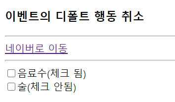
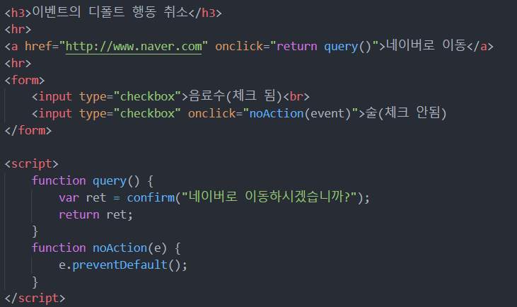
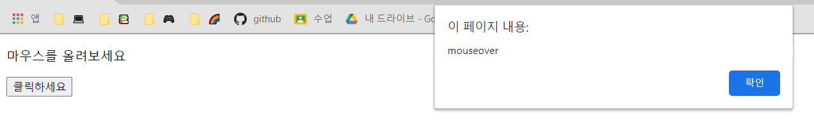
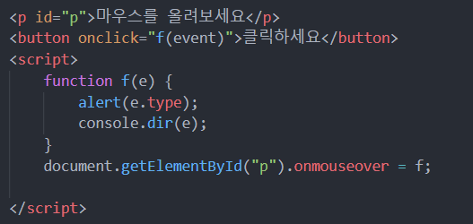

1. 이벤트 객체 (event object)
- 발생한 이벤트에 관련된 다양한 정보를 담은 객체
- EX) mousedown 이벤트의 이벤트 객체 : 마우스 좌표, 버튼 번호 등의 정보 포함
keydown 이벤트의 이벤트 객치 : 키 코드 값, <shift>키 눌러졌는지 등의 정보 포함
- 이벤트 리스너는 이벤트 객체의 프로퍼티 값을 통해 발생한 이벤트에 관한 자세한 정보를 알 수 있음
- 이벤트가 완전히 처리되고 나면 이벤트 객체는 소멸됨
2. 이벤트 객체 전달받기
--> 이벤트 객체는 이벤트 리스너 함수의 첫 번째 매개변수에 전달
- 이름을 가진 이벤트 리스너 함수
function f(e){ //첫 번째 매개변수 e에 이벤트 객체 전달받음. (이름은 자유)
......}
obj.onclick = f; // obj 객체의 onclick 리스너로 함수 f 등록
- 익명 함수
obj.onclick = function(e){ //첫 번째 매개변수 e에 이벤트 객체 전달 받음
...
}
- HTML 태그에 이벤트 리스너 등록하는 경우 : event 라는 이름으로 전달
EX)
function f(e){
...
}
...
<button onclick="f(event)">버튼</button>
<div onclick = "alert(event.type)">버튼</div> // 이벤트 종류 출력
3. 이벤트 객체에 들어 있는 정보
-->이벤트 객체에 들어 있는 정보
- 현재 발생한 이벤트에 관한 다양한 정보(프로퍼티, 메소드)
- 이벤트의 종류마다 조금씩 다름
- type 프로퍼티 : 현재 발생한 이벤트의 종류를 나타내는 문자열(click, load 등)
- target 프로퍼티 : 이벤트를 발생시킨 객체(DOM객체 혹은 HTML 태그
- currentTarget 프로퍼티 : 현재 이벤트 리스너를 실행하고 있는 DOM 객체
- defaultPrevented 메소드 : 이벤트의 디폴트 행동이 취소되었는지를 나타내는 true/false 값
- preventDefault() 메소드 : 이벤트의 디폴트 행동을 취소시키는 메소드
4. 이벤트 객체에 들어 있는 정보
- target 프로퍼티 : 이벤트 타겟 객체를 가리킴
- 이벤트 타겟 : 이벤트를 발생시킨 DOM 객체(태그)
- <button> 태그의 버튼을 클릭하였으면, 이때 click 이벤트의 이벤트 타겟은 버튼
- <button onclick="f(event)">클릭하세요</button>
4. 이벤트의 디폴트 행동
- 특정 이벤트에 대한 HTML 태그의 기본 행동
- 예시
- <a>의 click 이벤트의 디폴트 행동 : 웹 페이지 이동
- submit 버튼의 click 이벤트의 디폴트 행동 :
- reset 버튼의 click 이벤트의 디폴트 행동 : 폼 초기화
- <input type = "checkbox>의 click 이벤트의 디폴트 행동 : 체크박스 선택
5. 이벤트의 디폴트 행동 취소, preventDefault()
- 이벤트의 디폴트 행동을 막는 방법
- 이벤트 리스너에서 false리턴
<a href="www.google.co.kr" onclick="return false"> 이동 안되는 링크 </a>
- 이벤트 객체의 preventDefault() 메소드 호출
<a href="www.google.co.kr" onclick="event.preventDefault();"> 이동 안되는 링크 </a>
--> 그러나 이벤트 객체의 cancelable 프로퍼티가 true인 경우만 취소 가능 (모든 이벤트의 디폴트 행동을 금지시킬 수 있는 것은 아님)
6. 예제 ; 이벤트의 디폴트 행동 취소

- '술' 란에 체크가 되지 않도록 행동 취소
- 네이버로 이동하겠냐는 질문에 확인을 눌렀을 때만 이동
예시 코드

7. 예제 ; 마우스 올렸을 때의 이벤트 출력하기

- '마우스를 올려보세요' 에 마우스를 올렸을 때 이벤트 값 출력
예시 코드
